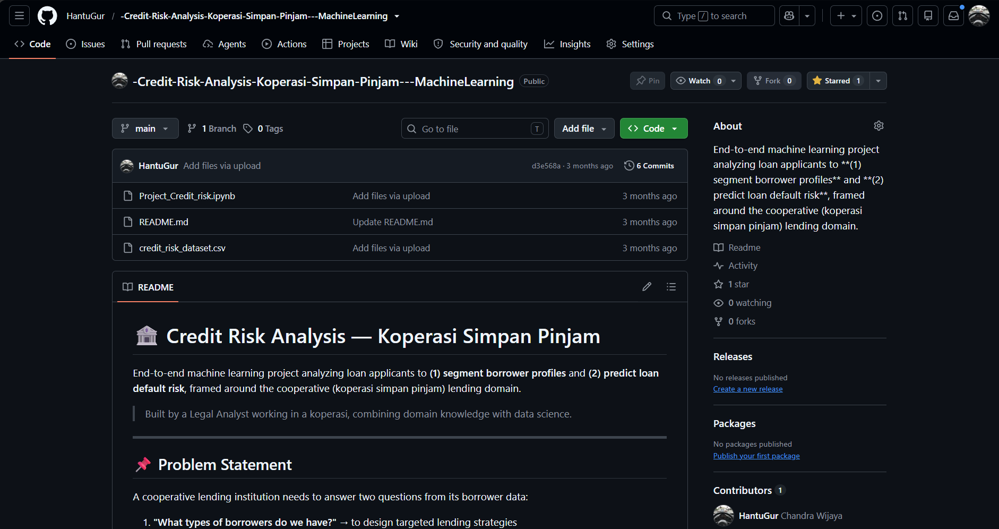
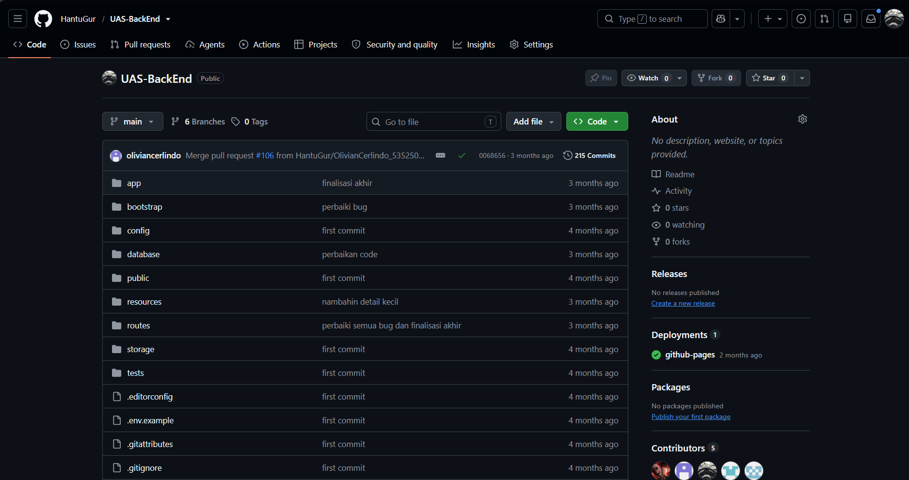
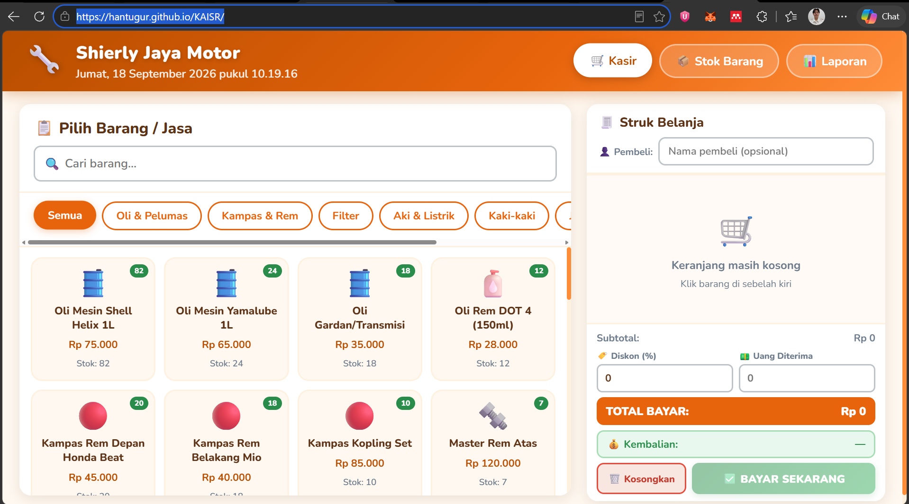
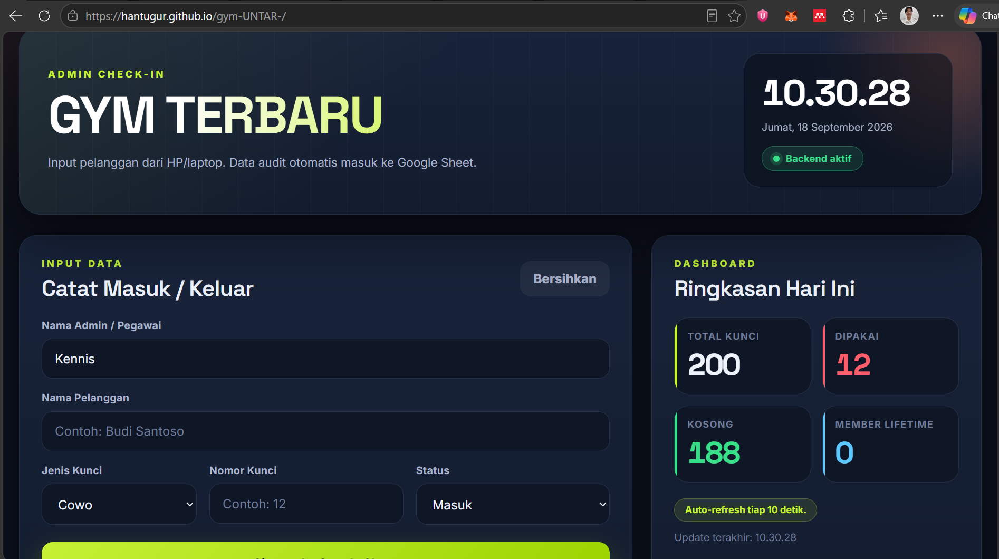
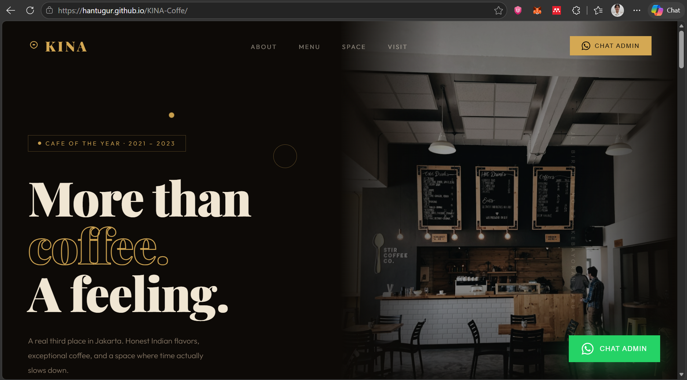
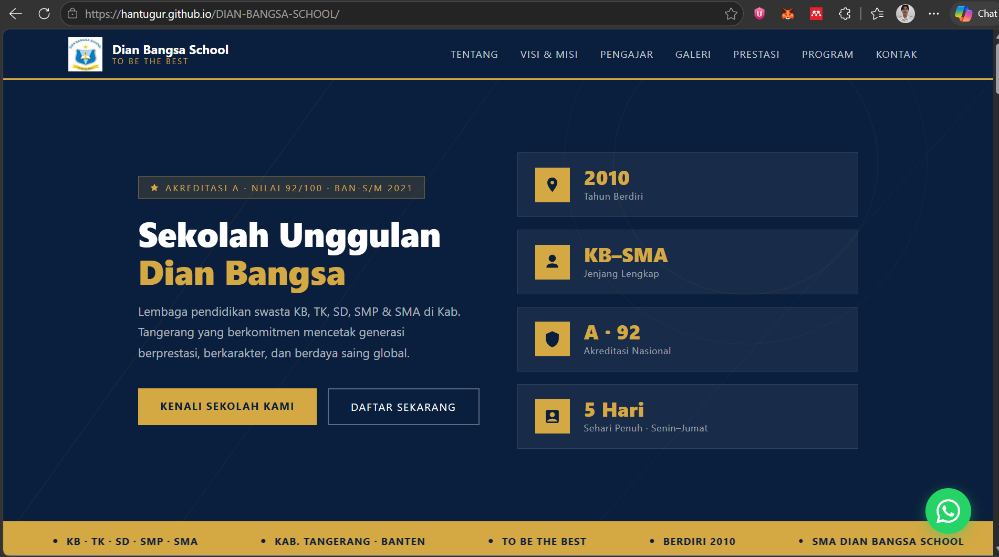

Credit Risk Analysis – Koperasi Simpan Pinjam
Proyek Machine Learning untuk menganalisis dan memprediksi risiko kredit pada koperasi simpan pinjam, membantu proses penilaian kelayakan calon peminjam secara lebih objektif.
Halo, perkenalkan saya
Saya adalah Mahasiswa UNTAR dengan Jurusan Teknik Informatika yang Bercita - cita untuk menjadi Seorang Ai engineer
Sedikit gambaran mengenai latar belakang dan kemampuan saya.
Perjalanan pendidikan dan pengalaman organisasi saya.
S1 Teknik Informatika
Menempuh pendidikan Strata 1 Teknik Informatika dengan fokus pada pengembangan perangkat lunak, algoritma, dan struktur data.
Jurusan IPS
Mengikuti Organisasi Keagamaan Dan Mengikuti OSIS
Menjadi Anggota Organisasi OSIS Dan Keagamaan
Menyelesaikan pendidikan dasar dengan baik
Devisi Social Business Development
Aktif dalam menjadi panitia atau anggota untuk acara Bakti Sosial Yang di laksanakan setiap 1 bulan sekali dan sebagai nya....
Beberapa proyek yang sudah saya kerjakan selama kuliah.
Disclamier : Beberapa Live Demo Tidak di tampikan untuk kepentingan Privasi.

Proyek Machine Learning untuk menganalisis dan memprediksi risiko kredit pada koperasi simpan pinjam, membantu proses penilaian kelayakan calon peminjam secara lebih objektif.

Proyek backend yang dikembangkan untuk Ujian Akhir Semester mata kuliah Backend, mencakup pembuatan API dan pengelolaan data di sisi server.

Saya membuat Pencatatan Pembelian barang di Toko Orang Tua menjadi lebih mudah Dalam artian saya membuat "Mesin Kasir" untuk mempermudah hal tersebut.

Sistem pencatatan aktivitas gym UNTAR yang terhubung langsung ke Google Sheets, sehingga setiap data yang diinput otomatis tercatat dan bisa langsung dipantau melalui spreadsheet tanpa perlu database terpisah.


Membuat Portofolio Coffe Shop KINA Dengan tujuan pemasaran by website